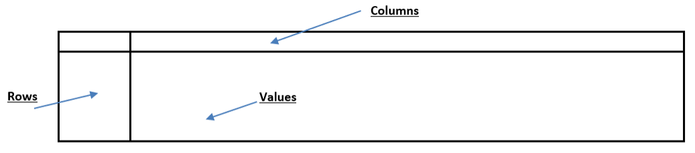

Data Analysis
Data Analysis is the process of cleaning, organizing, examining, describing, visualizing, and modeling data. In recent years, the proliferation of sensor technology, data storage capabilities, and computer power has created the possibiltiy for data analysis of huge datasets. Python is a powerful tool for data analysis.
This page focuses on the tasks of organizing and inspecting data. Topics include creating data structures, selecting data, and creating new data fields. For other aspects of data analysis, see Creating Plots and Statistical Analysis.
This page focuses on how to use pandas, a powerful and popular package for data analysis.
Import matplotlib, numpy, and pandas like this:
>>> import matplotlib.pyplot as plt
>>> import numpy as np
>>> import pandas as pd
Introduction to Pandas DataFrame
A pandas DataFrame stores tabular data (i.e. with rows and columns) and is created by reading an Excel spreadsheet or csv file (See Reading Input and Writing Output).
The following example reads an Excel file into a DataFrame called “df”. Any name can be used (perhaps “temperature_data” would be a good name), but “df” is short and easy to type.
One useful setting for pandas is to set the print display to show all columns when priting to the console in Spyder.
This setting is pd.set_option('display.max_columns', None)
It is common practice to start a script in this order: docstring, imports, settings, and folder paths.
>>> """
>>> Examples of data analysis using pandas.
...
>>> @author: Mike Lowry
>>> """
...
>>> import matplotlib.pyplot as plt
>>> import numpy as np
>>> import pandas as pd
...
>>> pd.set_option('display.max_columns', None)
...
>>> folder_path = r'C:\Users\mlowry\OneDrive - University of Idaho\Courses\CE215\Data_Files'
>>> output_folder_path = r'C:\Users\mlowry\OneDrive - University of Idaho\Courses\CE215\Part2_Python\Output'
...
...
>>> # Example creating a dataframe called "df".
>>> my_data_file = folder_path + r'\Temperature_Data.xlsx'
>>> df = pd.read_excel(my_data_file, sheet_name="Sheet1")
...
DataFrames can be viewed in Spyder’s Variable explorer.

Another way to look at a DataFrame is to print df.head(n) or df.tail(n)
to print the first n rows or last n rows, respectively. The default is n=5. This is useful is printing the entire
DataFrame would be too long.
>>> # Example printing the first rows (default n=5).
>>> print(df.head())
Time_Minutes Gas1 Gas2 Gas3
0 0 103.764 42.666 59.036
1 2 118.377 42.595 67.425
2 4 99.893 53.041 67.499
3 6 118.005 57.925 74.474
4 8 97.713 59.223 73.892
A pandas dataframe is a class with various attributes and methods (See Class and Object). You can see the list of pandas attributes and methods by scrolling down the page here: pandas.DataFrame The following are a few useful attributes of a DataFrame.
>>> # Example DataFrame attributes.
>>> df.shape # The dimensions.
(21, 4)
>>> df.size # The number of elements.
84
>>> df.columns # The column labels.
Index(['Time_Minutes', 'Gas1', 'Gas2', 'Gas3'], dtype='object')
>>> df.index # The row labels, which are given automatically.
RangeIndex(start=0, stop=21, step=1)
Selecting and Copying Data
The best way to access specific rows and columns (i.e. index and slice) is with .loc which stands for locate.
>>> # Example: Select row 7 and all columns.
>>> df.loc[7]
Time_Minutes 14.000
Gas1 92.186
Gas2 79.430
Gas3 75.569
Name: 7, dtype: float64
...
>>> # Example: Select row 3 for columns Gas1 and Gas2.
>>> df.loc[3, ['Gas1', 'Gas2']]
Gas1 118.005
Gas2 57.925
Name: 3, dtype: object
...
>>> # Example: Rows 3 and 6. Columns Gas1 and Gas2.
>>> df.loc[[3,6], ['Gas1', 'Gas2']]
Gas1 Gas2
3 118.005 57.925
6 99.847 65.443
If you want to select the whole column, then .loc is not needed.
>>> # Example selecting a whole column.
>>> df['Gas1']
0 103.764
1 118.377
2 99.893
3 118.005
4 97.713
5 90.936
6 99.847
7 92.186
8 87.843
9 78.924
10 78.805
11 73.800
12 75.979
13 67.115
14 59.350
15 69.208
16 71.903
17 74.239
18 47.062
19 64.976
20 45.363
Name: Gas1, dtype: float64
A selection actually creates a new DataFrame. The following examples select data and assign the result to a
new DataFrame called d.
>>> # Example creating a new DataFrame from one column.
>>> # (technically this is called a Series because it only has one column).
>>> d = df['Gas1']
>>> print(d.head())
0 103.764
1 118.377
2 99.893
3 118.005
4 97.713
Name: Gas1, dtype: float64
...
>>> # Example creating a new DataFrame from multiple columns.
>>> # Note the double brackets [[]] for a list of column labels.
>>> d = df[['Gas1', 'Gas3']]
>>> print(d.head())
Gas1 Gas3
0 103.764 59.036
1 118.377 67.425
2 99.893 67.499
3 118.005 74.474
4 97.713 73.892
Any name could be used for the new dataframes. Perhaps better names for the examples above would be
gas1 = df['Gas1'] and gas_data = df[['Gas1', 'Gas3']]
Creating New Columns
Simple Calculations
For simple calculations, new columns can be created by referenceing existing column names.
>>> # Example creating new columns with simple calculations.
>>> df["Combined"] = df['Gas1'] + df['Gas2']
...
>>> # Another example creating new columns with simple calculations.
>>> df["SuperGas"] = df['Gas1'] * 1000
...
>>> print(df.head(2))
Time_Minutes Gas1 Gas2 Gas3 Combined SuperGas
0 0 103.764 42.666 59.036 146.430 103764.0
1 2 118.377 42.595 67.425 160.972 118377.0
Tip
Existing column names that do not have any spaces, can be referenced with a dot . because the columns are technically attributes of the
DataFrame object. This approach is often easier and faster to write. For example, the following are identical procedures.
>>> # Example showing that columns can be referenced with square brackets or a dot.
>>> # These calculations are exactly the same.
>>> df["Combined"] = df['Gas1'] + df['Gas2']
>>> df["Combined"] = df.Gas1 + df.Gas2
Complicated Calculations
For complicated calculations, new columns can be created by defining a function and then applying the function to every row (There are other ways to do this, but this is the most straight forward and modifiable way for beginner programmers).
The function is defined with row as the parameter because the function will be applied row by row
(The function can have any name; such as f for simplicity). Then, within the
function the columns are referenced to select data as needed (in this example only one column Gas1 is used, but more columns could be
referenced in the function to select additional data).
Finally, .apply() is used to create the new column. .apply() loops over each row and performs the function.
The parameter axis='columns' designates that the function is to be applied down the column(s).
>>> # Example applying a function to create a new column.
>>> def f(row):
... temp_f = row['Gas1']
... temp_c = (temp_f - 32)*5/9
... return temp_c
...
...
>>> df['Gas1_C'] = df.apply(f, axis='columns')
>>> print(df.head(2))
Time_Minutes Gas1 Gas2 Gas3 Combined SuperGas Gas1_C
0 0 103.764 42.666 59.036 146.430 103764.0 39.868889
1 2 118.377 42.595 67.425 160.972 118377.0 47.987222
Plotting Columns
Columns can be plotted easily (See Creating Plots).
plot and scatter can be used for numeric data.
>>> # Example plotting numeric data.
>>> plt.figure(1)
>>> plt.plot(df['Time_Minutes'], df['Gas1'])
>>> plt.xlabel("Time")
>>> plt.ylabel("Gas 1 Temperature (F)")
>>> plt.xticks(rotation=90)
>>> plt.show()
pie, bar, and barh can be used for categorical (nominal) data. Consider for example the categorical data on a different sheet called Gases in the same Excel file.
>>> # Example plotting categorical data.
>>> df = pd.read_excel(my_data_file, sheet_name="Gases")
>>> print(df)
Gas ID Name Moles
0 1 Helium 10.5
1 2 Oxygen 8.6
2 3 Nitrogen 9.8
...
>>> # Pie Chart
>>> plt.figure(2)
>>> plt.pie(df["Moles"], labels=df["Name"], autopct='%0.0f%%')
>>> plt.show()
...
>>> # Bar Chart
>>> plt.figure(3)
>>> plt.bar(df["Name"], height=df["Moles"])
>>> plt.ylabel("Moles")
>>> plt.show()
...
>>> # Horizantal Bar Chart
>>> plt.figure(4)
>>> plt.barh(df["Name"], width=df["Moles"], color='m')
>>> plt.xlabel("Moles")
>>> plt.show()


{kind=link}
{kind=link}
{kind=link}
{kind=link}
{kind=link}
{kind=link}
{kind=link}
{kind=link}
Querying a DataFrame
There are a various ways to query a DataFrame. One way is to use .query()
with a logical condition in quotes between the parenthesis. See the table of logic conditions.
Consider for example a dataset that is from a company’s project database. The dataset has
information about all the projects that have been completed, including the name of the project manager,
the start date, budget, and actual costs. Lets begin by getting to know the DataFrame with
df.shape, df.columns, and df.head. We discover that the DataFrame has 500 rows and 10 columns.
>>> import matplotlib.pyplot as plt
>>> import numpy as np
>>> import pandas as pd
...
>>> pd.set_option('display.max_columns', None)
...
>>> folder_path = r'C:\Users\mlowry\OneDrive - University of Idaho\Courses\CE215\Data_Files'
>>> output_folder_path = r'C:\Users\mlowry\OneDrive - University of Idaho\Courses\CE215\Part2_Python\Output'
...
...
>>> # Example dataset from a company's project database.
>>> my_data_file = folder_path + r'\Company_Project_Data.xlsx'
>>> df = pd.read_excel(my_data_file, sheet_name='Projects')
>>> df.shape
(501, 9)
...
>>> df.columns
Index(['ProjectID', 'Engineer', 'ManagerID', 'StartDate', 'EstimatedDays',
'ActualDays', 'EstimatedCost', 'ActualCost', 'CategoryID'],
dtype='object')
...
>>> df.head()
Now suppose we want to query the dataset for all projects with an actual cost less than $1,000,000. We
use .query() which returns a new DataFrame we wil call d. We can inspect the
shape of d and find that 173 rows meet the condition out of the original 500 rows.
>>> # Example query.
>>> d = df.query("ActualCost <= 1000000")
>>> d.shape
(195, 9)
Here are a few more examples. Notice any name could be used for the resulting DataFrame
that is returned by the query, but for simplicity we use and overwrite d each time. When we complete a query, we could print d to see the result, or we
could inspect it using the Variable explorer in Spyder. In the examples below we simply look at d.shape to note the query result.
Example 2 shows it is good practice to wrap the logical condition in double quotes
so that strings within the expression can be in single quotes, such as "Manager == 'Woods, Susan'".
Example 3 shows a compound logical condition.
Example 4 shows queries that are done on already queried DataFrames. Each line of code overwrites d with the latest result.
>>> # Example 1
>>> d = df.query("ActualCost <= 1000000")
>>> d.shape
(173, 10)
...
>>> # Example 2
>>> d = df.query("Manager == 'Woods, Susan'")
>>> d.shape
(48, 9)
...
>>> # Example 3
>>> d = df.query("EstimatedDays >= 30 and EstimatedDays <= 60")
>>> d.shape
(201, 9)
...
>>> # Example 4 (Queries on already queried DataFrames)
>>> d = df.query("CategoryID == 5")
>>> d = d.query("EstimatedDays > 20")
>>> d = d.query("EstimatedCost > 500000")
>>> d.shape
(77, 9)
Tip
The Python language is famous for being very readable. Python Style
stresses using variable names that are readable. However, for data analysis it is common to
use short, simple variable names like df, d, and d1, etc. because you are frequently creating
and overwriting DataFrames with queries and pivot tables.
Note
Another way to query is to use .loc to locate rows that satisfy the logical condition. The following is identical to Example 1.
>>> # Example 1 again using .loc
>>> d = df.loc[df["ActualCost"] <= 1000000]
>>> d.shape
(195, 9)
This can be nice because at the same time you can also limit the columns that are returned. Below only three columns are returned to the new DataFrame.
>>> # Example 1 again using .loc and limiting the columns returned.
>>> d = df.loc[df["ActualCost"] <= 1000000, ["Engineer", "EstimatedCost", "ActualCost"]]
>>> d.shape
(195, 3)
Pivoting a DataFrame
Data analysts often want to look at data from all different angles to answer questions, i.e. they want to “pivot” the data. This might be achieved simply through selecting and querying the data, but sometimes more sophisticated methods are needed.
This section describes how to create cross tables using .pivot_table().
A table has rows, columns, and values.
The primary parameters are:
.pivot_table(values, index, columns, aggfunc, fill_value)
valuesthe df column that will be aggregated to fill the table.indexthe df column that will become the rows of the table.columnsthe df column that will beome the columns of the table.aggfuncis how to aggregate the values, such as"count","sum","mean","max", and"min".fill_valuefills empty cells in the table.
For example, suppose we want to know the average number of actual days for each manager by project category ID. We will create a table that has Manager in the rows, CategoryID in the columns, and ActualDays for the values that are averaged (mean).
Often the most challenging aspect of pivoting data is trying to think of what is needed to answer the question, i.e. what is needed for rows, columns, and values. The best way to proceed is to try and try again. In other words, pivot with something in the rows and columns; and then pivot again with something different, each time looking at the resulting DataFrame in Variable explorer. Generally, it is good to have the number of rows be more than the number of columns.
>>> # Example Pivot Table to calculate mean values.
>>> d = df.pivot_table(values="ActualDays", index="Engineer", columns="CategoryID", aggfunc="mean", fill_value=0)
>>> print(d)
CategoryID 1 2 3 4 5
Manager
Boyce, Bruce 75.962500 48.933333 60.525000 73.075000 81.612500
Colton, Greg 73.700000 77.000000 63.500000 81.980000 104.300000
Degas, Josh 76.216667 64.666667 69.966667 79.950000 71.575000
Guza, Adina 88.533333 71.500000 69.383333 57.525000 59.433333
Jaffe, Jerry 48.125000 61.316667 51.140000 78.055556 65.525000
Marlow, Daniel 69.366667 68.900000 56.600000 55.900000 91.000000
Murphy, Mary 66.983333 71.637500 69.961538 51.060000 61.025000
Pac, Su Li 72.612500 50.520000 66.600000 77.633333 70.487500
Rivera, Titus 59.083333 62.466667 69.212500 79.000000 72.083333
Steele, Richard 67.718182 73.684211 101.300000 58.340000 53.611111
Stone, Jeff 79.150000 85.100000 66.750000 77.700000 69.066667
Turnage, Leslie 53.785714 82.850000 83.125000 69.866667 75.325000
Weaver, Diane 63.166667 72.971429 83.266667 71.325000 71.071429
Wolff, Carolyn 50.730000 74.857143 67.130000 61.780000 70.685714
Woods, Susan 73.640000 79.890909 78.190000 54.320000 77.425000
In a similar way we could find the maximum numer of days by using aggfunc="max" or the sum using aggfunc="sum".
The parameter columns is optional and if it is not included then the table is collapsed to a table without column categories.
>>> # Example without the columns parameter.
>>> d = df.pivot_table(values="ActualDays", index="Engineer", aggfunc="mean", fill_value=0)
>>> print(d)
ActualDays
Manager
Boyce, Bruce 69.998000
Colton, Greg 77.705882
Degas, Josh 70.708333
Guza, Adina 68.942857
Jaffe, Jerry 62.091667
Marlow, Daniel 62.418750
Murphy, Mary 66.219444
Pac, Su Li 69.115385
Rivera, Titus 68.080645
Steele, Richard 67.863043
Stone, Jeff 75.921739
Turnage, Leslie 69.356522
Weaver, Diane 71.200000
Wolff, Carolyn 65.474510
Woods, Susan 74.954167
Often data analysts want to create a special table called a “Frequency Cross Table” that has a count of the occurences for the row and column pairs.
However, there needs to be soemthing to count. One way to do this is to create a column called dummy that is equal to 1 and then set values="dummy" and
aggfunc="count".
For example, suppose we want to know the count of projects done by each manager for each project category ID. We first create the dummy column.
>>> # Example creating a Frequency Cross Table.
>>> # First, create a dummy column and then count the number of occurances.
>>> d["dummy"] = 1
>>> d = df.pivot_table(values="dummy", index="Engineer", columns="CategoryID", aggfunc="count", fill_value=0)
>>> print(d)
CategoryID 1 2 3 4 5
Manager
Boyce, Bruce 8 6 8 20 8
Colton, Greg 4 5 2 5 1
Degas, Josh 6 12 6 4 8
Guza, Adina 3 5 6 4 3
Jaffe, Jerry 8 6 5 9 8
Marlow, Daniel 3 2 4 6 1
Murphy, Mary 6 8 13 5 4
Pac, Su Li 8 5 9 9 8
Rivera, Titus 6 6 8 5 6
Steele, Richard 11 19 2 5 9
Stone, Jeff 2 7 4 4 6
Turnage, Leslie 7 2 4 6 4
Weaver, Diane 6 7 3 4 7
Wolff, Carolyn 10 14 10 10 7
Woods, Susan 10 11 10 5 12
Counting Values
There are two ways to count the values (occurences) of a column. One way is to create a Frequency Cross Table using .pivot_table() with only the index.
The easier way is to use .value_counts() directly on the column. The order of the output might be different between these two methods, but the result is identical.
>>> # Example using .pivot_table to get the count of a column.
>>> df['dummy'] = 1
>>> d = df.pivot_table(values="dummy", index="Engineer", aggfunc="count", fill_value=0)
>>> print(d)
dummy
Manager
Boyce, Bruce 50
Colton, Greg 17
Degas, Josh 36
Guza, Adina 21
Jaffe, Jerry 36
Marlow, Daniel 16
Murphy, Mary 36
Pac, Su Li 39
Rivera, Titus 31
Steele, Richard 46
Stone, Jeff 23
Turnage, Leslie 23
Weaver, Diane 27
Wolff, Carolyn 51
Woods, Susan 48
...
...
>>> # Example using .value_counts() to get the count of a column.
>>> d = df["Engineer"].value_counts()
>>> print(d)
Wolff, Carolyn 51
Boyce, Bruce 50
Woods, Susan 48
Steele, Richard 46
Pac, Su Li 39
Degas, Josh 36
Jaffe, Jerry 36
Murphy, Mary 36
Rivera, Titus 31
Weaver, Diane 27
Stone, Jeff 23
Turnage, Leslie 23
Guza, Adina 21
Colton, Greg 17
Marlow, Daniel 16
Name: Manager, dtype: int64
Value counts are often used for pie, bar, and barh charts. Using either .pivot_table() or .value_counts()
the result is a one dimensional DataFrame (technically called a Series) with the index being the unique categories.
Therefore in this example, the counts are d and the categories are d.index.
The following are plots for count values. (Notice the parameter order is different for pie and barh. See the Note on Creating Plots for information about parameter order)
>>> # Example horizontal bar chart from a DataFrame column.
>>> # Get the count for each Engineer.
>>> d = df['Engineer'].value_counts()
...
>>> plt.figure(6)
>>> plt.barh(d.index, width=d)
>>> plt.xlabel("Number of Projects")
>>> plt.show()
{kind=link}
{kind=link}

>>> # Example pie chart from a DataFrame column.
>>> # Get the count for each category.
>>> d = df['CategoryID'].value_counts()
...
>>> plt.figure(5)
>>> plt.pie(d, labels=d.index, autopct='%0.0f%%', shadow=True)
>>> plt.axis("equal")
>>> plt.title("Categories")
>>> plt.show()
{kind=link}
{kind=link}